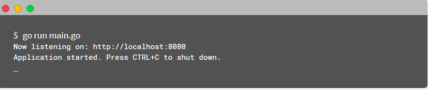

开始使用¶
下面你会看到一个例子，当然没有涵盖所有的功能，但是，如果您想继续阅读本书的下一部分，那将是一件好事。
假设您已经安装了Google Go。如果没有，请按照安装指南。
go get -u github.com/kataras/iris
package main
import (
"github.com/kataras/iris"
"github.com/kataras/iris/middleware/logger"
"github.com/kataras/iris/middleware/recover"
)
func main() {
app := iris.New()
app.Use(recover.New())
app.Use(logger.New())
// Method: GET
// Resource: http://localhost:8080
app.Handle("GET", "/", func(ctx iris.Context) {
ctx.HTML("<h1>Welcome</h1>")
})
// same as app.Handle("GET", "/ping", [...])
// Method: GET
// Resource: http://localhost:8080/ping
app.Get("/ping", func(ctx iris.Context) {
ctx.WriteString("pong")
})
// Method: GET
// Resource: http://localhost:8080/hello
app.Get("/hello", func(ctx iris.Context) {
ctx.JSON(iris.Map{"message": "Hello Iris!"})
})
// http://localhost:8080
// http://localhost:8080/ping
// http://localhost:8080/hello
app.Run(iris.Addr(":8080"))
}
使用main.go（由您决定）保存上面的代码并运行以下命令来启动服务器

让我们这样做，这次使用MVC设计模式。
package main
import (
"github.com/kataras/iris"
"github.com/kataras/iris/mvc"
"github.com/kataras/iris/middleware/logger"
"github.com/kataras/iris/middleware/recover"
)
func main() {
app := iris.New()
app.Use(logger.New())
app.Use(recover.New())
mvc.New(app).Handle(new(ExampleController))
// http://localhost:8080
// http://localhost:8080/ping
// http://localhost:8080/hello
app.Run(iris.Addr(":8080"))
}
type ExampleController struct {}
/*
* Get serves
* Method: GET
* Resource: http://localhost:8080
*/
func (c *ExampleController) Get() mvc.Result {
return mvc.Response{
ContentType: "text/html",
Text: "<h1>Welcome</h1>",
}
}
/*
* GetPing serves
* Method: GET
* Resource: http://localhost:8080/ping
*/
func (c *ExampleController) GetPing() string {
return "pong"
}
/*
* GetHello serves
* Method: GET
* Resource: http://localhost:8080/hello
*/
func (c *ExampleController) GetHello() interface{} {
return map[string]string{"message": "Hello Iris!"}
}